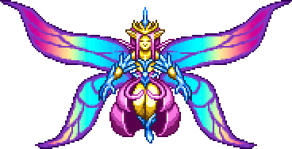

hИмператрица света - это босс сложного режима, который имеет 70,000 HP. Её можно вызвать, убив призматическую златоглазку в Освящении после убийства Плантеры. Императрица света атакует следующим образом: в первой фазе она летает над игроком, стреляя в него разноцветными снарядами, а во второй фазе она помимо снарядов будет пускать в ход и призматические линии, которые всегда наводятся на игрока. Лучше босса убивать ночью, так как днём она атакует с бешеной силой и убивет игрока с одного удара, хотя если её убить днём, то из неё выпадет Террапризма со 100% шансом. Также неплохо было бы иметь Ключ НЛО, который можно получить только после победы над Големом.
Из Императрицы света выпадают довольно хорошие нужные и вещи, что позволит легче и быстрее победить финального босса игры.